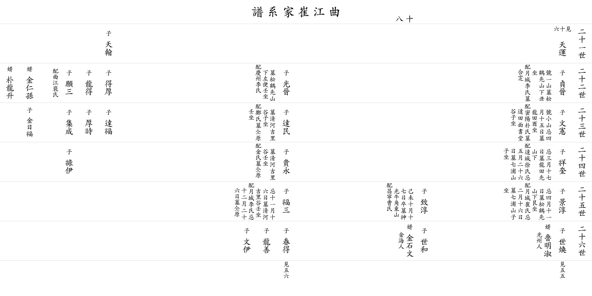

| 곡 강 최 가 계 보 |
| 이전☜ 쪽 18 ☞다음 |
| 21세 |
▲ 천한 天翰 |
아버지 준걸(俊傑)의 둘째 아들
자 익보(益甫) 할머니 경주이씨 아들 셋과 따님 둘을 두셨다. 사위 김인손(金仁孫) 외손 김일복(金日福) 박용승(朴龍升) |
||||||||||
| 22세 |
▲ 정진 貞晉 |
아버지 ▲천운(天雲)의 셋째 아들 호 일산(一山) 묘 송학선산 아래 남서향(丑坐) 할머니 월성이씨 묘 합장 |
▲ 광진 光晉 |
아버지 ▲천운(天雲)의 넷째 아들 묘 송학선산 아래 왼쪽 남남동향(壬坐) 할머니 경주이씨 |
득후 得厚 |
용득 龍得 |
원삼 願三 |
할머니 곡강배씨 |
||||
| 23세 |
문헌 文憲 |
호 소산(小山) 제삿날 4월15일 묘 용전 정동향(酉坐) 할머니 밀양박씨 묘 달전면 서당골(書堂谷) 정남향(子坐) |
달민 達民 |
묘 청하 길리골(吉里谷) 정남향(子坐) 할머니 정씨 묘 할아버지와 같은 곳, 남남동향(壬坐) |
달복 達福 △ |
후시 厚時 △ |
집성 集成 △ |
|||||
| 24세 |
상규 祥奎 |
제삿날 3월17일 묘 용전 선산 아래 할머니 달성서씨 제삿날 5월26일 묘 칠포산 정남향(子坐) |
귀영 貴永 |
묘 청하 길리골(吉里谷) 남남동향(壬坐) 할머니 김씨 묘 할아버지와 같은 곳 |
녹이 祿伊 △ |
|||||||
| 25세 |
경순 景淳 |
제삿날 4월11일 묘 송학선산 아래 남서향(艮坐) 할머니 월성최씨 제삿날 2월16일 묘 칠포산 정남향(子坐) 사위 광주인(光州人) 노명숙(魯明淑) |
치순 致淳 |
1919(己未)년 7월17일 별세 묘 신광면 우각 동산(東山) 할머니 창녕조씨 사위 김해인 김석문(金石文) |
복삼 福三 |
제삿날 11월16일 묘 청하 길리골(吉里谷) 남남동향(壬坐) 할머니 월성이씨 제삿날 12월26일 묘 할아버지와 같은 곳 |
||||||
| 26세 |
세환 世煥 ▼ |
세화 世和 △ |
춘득 春得 ▼ |
용선 龍善 ▼ |
문이 文伊 ▼ |
|||||||
| 이전☜ 쪽 18 ☞다음 |
|  |